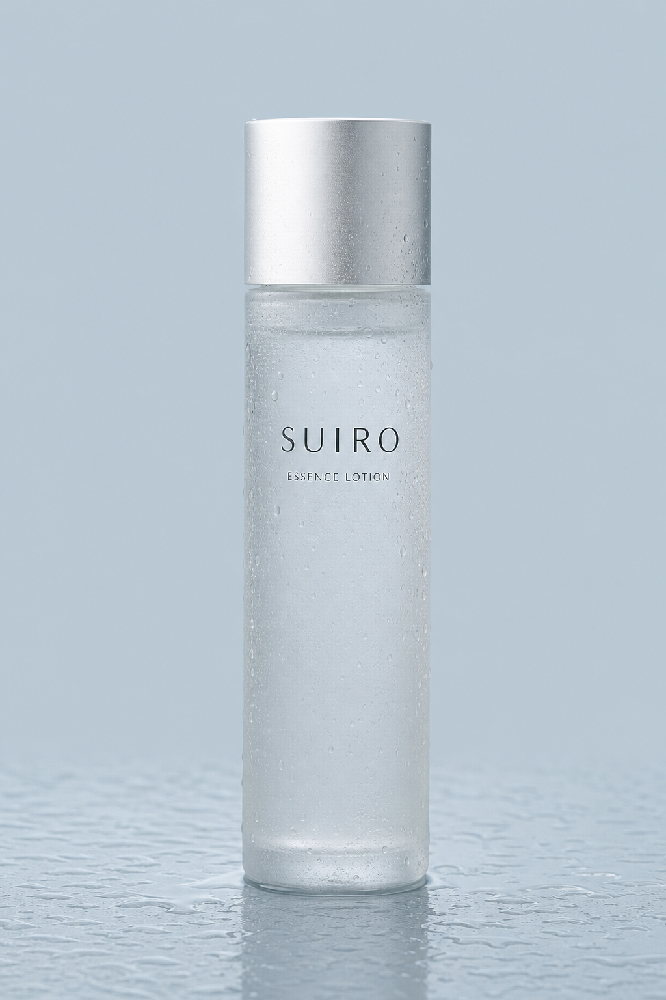

01
ボトルと水面。一本の輪郭を、光の移動で見る。
ESSENCE LOTION / 150mL
A QUIET WATER RITUAL
SUIRO 化粧水
架空商品・デザイン確認用／実際には購入できません

すっと手に取り、
少量ずつ、2回に分けて。
日々の支度に、
静かなリズムを。
SUIROは、化粧水という身近な一本を、使う時間と手順から見つめるための架空プロダクトです。このページでは確認済みの情報だけを、写真・図・動きに分けて紹介します。

水のように軽い使用感


SUIRO ESSENCE LOTION
3,520円 （税込）
架空商品のため購入できません。ボタンはデモ表示です。
ボトルと水面。一本の輪郭を、光の移動で見る。
キャップまわりと手元。使い始める直前の動き。
“たくさんの言葉より、
毎日迷わず使えること。”

MORNING / NIGHT
朝も夜も、基本は同じ。少量を手に取り、一度にまとめず2回に分けてなじませます。
A ROUTINE IN TWO LIGHTS
朝に使う。少量を手に取り、2回に分けてなじませる。基本の情報を、朝の場面に置き換えて確認します。
夜にも、同じ手順を。効果や肌変化ではなく、使う時間と動作だけを静かに切り取ります。
朝と夜で別の使い方をつくらず、確認済みの基本だけを繰り返します。
確認できていることを、
まっすぐに。
ボトル容量
税込価格
香りの仕様
使用タイミング
未確認の成分・効能、口コミ、受賞、販売数、割引、配送・返品条件、比較優位は掲載していません。
150mL 3,520円（税込）
一度目。
少量を手に取る。
二度目。
もう一度、少量を。
量の目安や効能をつくり足さず、確認済みの動作だけを丁寧に分解します。
少量を手に取る場面を、縦長の画面で確かめます。
朝も手順は同じ。映像は時間帯と動作だけを表現しています。
肌の変化や効果ではなく、夜に使う所作を切り取ります。
SUIROは架空の化粧水です。
確認済みの使用感です。
一日の始まりと終わりに。
2回に分けてなじませます。
OFFER / 03
3,520円 （税込）
150mL・無香料
まず少量を手に取ります。
一度目をなじませます。
もう一度、少量を取ります。
二度目をなじませます。
商品名、カテゴリー、容量。映像の上に効能を重ねず、基本情報はHTMLで伝えます。
「少量を2回」を、三つの映像でたどります。
TEXTURE NOTE
この表現は確認済みの商品情報です。肌への効果を示すものではありません。
量の数値は設定せず、「少量」という確認済みの案内をそのまま使います。
01FIRST
朝または夜、最初の少量を手に取ります。
02FIRST PASS
一度目をなじませます。肌への効果を示す比較表現は行いません。
03SECOND
二度目の少量を手に取ります。
SECOND PASS
二度目をなじませて、確認済みの基本手順は完了です。
一連の使用手順
映像は使い方のデザイン表現です。使用前後の比較、口コミ、効能の暗示は含みません。
MORNING & NIGHT
朝または夜、少量を手に取ります。
手に取った分をなじませます。
再び少量を手に取ります。
二度目をなじませて、基本の手順は完了です。
150mL 3,520円（税込）
キャップを閉め、洗面台へ戻す。最後の映像も、日常の所作だけを描きます。
PRODUCT RECORD
商品を詳しく見せるほど、未確認情報を補わないことが大切です。ここでは掲載情報の境界もデザインの一部として示します。
情報が確定するまで、空欄を架空の条件で埋めません。
少量を手に取り、2回に分けてなじませます。
無香料です。
いいえ。SUIROは架空商品で、このページはデザイン確認用です。フォームも送信されません。
販売主体・配送・返品条件は未確定のため、このデモページには掲載していません。
未確認のため掲載していません。確定情報以外を補うことはしていません。
OFFER / 05 · FINAL INFORMATION
3,520円 （税込）
架空商品・購入不可
DESIGN REVIEW FORM
このフォームはデザイン確認用です。入力内容は送信・保存されません。